频直播课程整理。（文章尽量保持“口语体和对话体” ，蓝色字体是学生互动内容。）
【课程摘要】
本次课程老师首先抛出了老子“上善若水”的一，也就是上善追求的是什么要从三个视角去获得一，从而引出321智慧的动态过程二。而如何找三呢？要从生活的具体
事物找，根据自己对水的了解，从水出发有两条路径，向内是拆分水，向外是从水出
发去大自然直观找到雨水与阳光，空气构成天的三视角。
接下来老师分析了天在云雨水，阳光，风的两两相互矛盾作用下的模式切换带来的地球生态发展，也点出了创新的方向，上善若风，上善若光。从而发现老子上善若
水的局限以及老子对水的认识论的狭隘，进一步发现他的思想充满逃避现实矛盾的理
想主义。
这次课程最精彩之处是通过321智慧的2的智慧，查出上善若水是解决哪一类矛盾，上善若风，上善若光解决哪一类矛盾！从而明白上善是三个视角的动态过程！上
善若水也揭开了中国人处理问题的一个伤疤，回避矛盾！指出我们的场与粒子视角都
是和谐的静态，就只能改波视角，所以老子强调不争！水利万物而不争！
老师进一步向内拆分解释了水的三个视角存在状态，再一次反应了老子对水认知的肤浅。最后指出，我们生命的智慧要如水，如风，如阳光，拥抱矛盾不要单一，才
能成长。践行上善若水的老子，在当时的体制下实际他的人生并不顺利，于是他转向
了做理论输出的太阳，让后人成为研究与践行《道德经》的风与水！
【导读目录】
一、321智慧的解构进路
二、上善若光，若水，若风
三、“上善若水”是要解决什么矛盾
四、上善若水是中国人回避矛盾的总指导
五、没有“名字”的中国人
六、师生问对
七、学员感想
一、321智慧的解构进路
大家下午好。
今天大家不仅要学会一些结论，还要学会如何用321智慧去解构。尤其是解构这些
所谓文化里面的经典。一旦解构了，那这个创新就不是一点点创新了。那今天我们就
是用321智慧来解构道德经里面的一个核心的东西叫做“上善若水”。
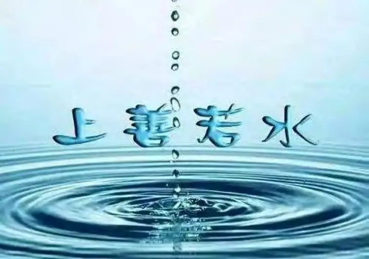
“上善”是什么呢？就是至高的善。像水一样的生活那你就有至高的善，那就什么事情都可以做成功。很多人的微信名都是上善若水。估计他听完我这个课呢，可能
就要换名字了。321智慧有几个数字啊？有三个。那么你从3就想到什么呢？自然你就
想到三视角。那从2 你想到什么呢？
（从2想到矛盾冲突）
那1呢？1就想到一个整体，它是最模糊的，最难的。所以1就用黑点表示，就是它
是永远不清。但是呢，我们每一次解构之后，就使这个1，这个整体性就更加整全一
点。那么上善若水这里面的词语要服务的一是什么？就是我们想通过321来获得，来增
进我们对1的了解，那这个1是什么呢？这就是我们所关心的对象，我们想要知道的东西，那么上善若水里面的1 是什么？
（水）
不是。我们不是关心水，而是“上善”知道不？这是大家要追求的东西，所以现
在大家知道1就是我们要追求和获得的，我们想要弄明白的东西。所以，你找个老婆就要一心一意。但要怎么才能一心一意呢？你要从三个角度去什么？去一心一意，知道
不？懂吗？
那三个角度怎么能一心一意呢？所以就要通过什么啊？通过2来转，才能显得一心
一意。这个很重要啊。那现在在“上善若水”里面哪一个字值得我们首先思考呀？你
能不能从“上善”开始啊？当然也是可以，只是要看你的水平。那大部分人会从哪里
开始呢？
（水)
对，就是321应该从哪里开始？应该从3开始.那么从3开始呢，就是要从比较具体
的东西，比较细节的东西开始。越是细节，越是跟我们现实生活相关的东西，我们就
越容易找到三，是不是啊？比如说你讲善的化，有的人甚至善是什么都不知道，是不是？它是很抽象的。所以，上善若水，如果我们解构这句话的化？那首先我们是要思
考哪个字啊？水
（水)
对，那个水字，你要不要思考很多啊？那个“若”字就是类比，它是虚词。所以，在上善若水里面有两个字是很关键的，一个是“善”，一个是“水”。首先用3来
思考水，那你会想到什么？3是三个视角。此时你就自然有两个方向，一个是朝里面，
一个是朝外面，你看有个2来了。一个方向，是把“水”分解为三个视角。另外一个，
是把水打个包，看水跟其他的什么有没有组成一个三角，是不是啊？
那你们觉得如果你要创新的话，从哪个方面好一些，这里又有个二，也是个矛
盾，知道不？他就决定于你对水的理解程度，但是如果要创新的话呢，你觉得要从外
面开始，还是从里面开始，哪个更好啊？从外面，这个叫做把水当作整体来思考，水
跟其他组成哪个三视角，这个就是对水的直观认知，懂了吗？所以，现在你就知道，这个时候你要到什么地方才能直观水啊？
（大自然）
不是。你要到外面去看看天啊，你就知道水跟哪些东西组成了一个三视角啊？阳
光，雨水和空气形成了三个视角。这个时候就叫什么呢？知道吗？合起来就是“天”！天上有太阳，有风，有水。除此之外还有其他什么东西吗？
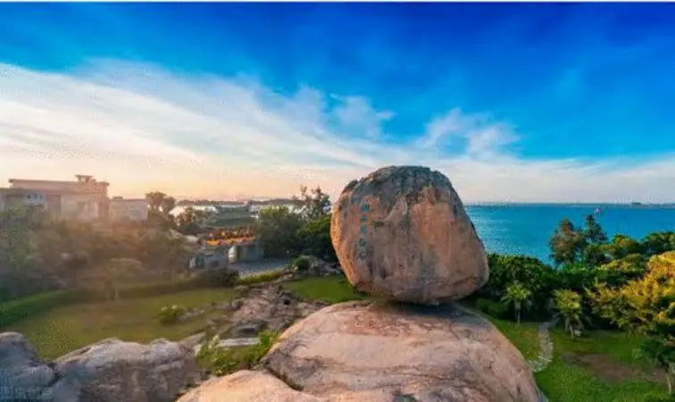
（还有云）
我的妈呀，云是什么，你都不知道吗？云就是水啊，雨也是水，此外还有雾。雾
就是水的什么状态啊？你要是坐了飞机，你就知道，一飞进云层之中的时候，那真的是一片大雾。所以，那么雨就是一粒一粒的。它掉下来嘛，会砸痛你的头。那么水的
波是什么呢？
（云）
对，水的波就是云。这个陆地上的水占整个地球的水，你们以为水都在地上是不是啊？那大家想一想，如果绝大部分水都在地上的话，那是不是有问题呀？现在我要
问大家，风是怎么形成的呢？空气流动形成风。那空气为什么流动呢？
是因为有气压差，那气压差是怎么引发的，你们知道吗？如果这个天上没有水能形成气压差吗？不会的。气压差是怎么形成的呢？是太阳跟谁发生矛盾呢？知道吗？
太阳跟水发生矛盾。也就是太阳照在水上面，温度升高之后水就开始做随机运动，知
道吗？
水在发生矛盾的时候，有两种选择，这两种选择才有可能形成气压差，懂吗？这个时候有些水分子往上面走，有些往下面走。形成了气压差之后，空气就开始流动。
其实，空气自己是不流动的。空气的成分有二氧化碳，氮气等，这些气体分子它自己
流不流动啊？它能不能很快的加热啊？它是很难的，真正加热的是水分子。
大家这个时候你就知道为什么你烧水的时候，那个水热得很快，是吧？水的传热是很快的。那么，这个时候你就知道什么？大气中的水分子推动这些什么？空气分子
形成了风，风一吹的话，就会有气压差，太阳跟雨水的矛盾就会被减少了。所以，风
能不能吹很长的时间啊？
（不能）
风能不能一直吹下去，你看风，是从某个地方开始的，然后就慢慢减弱，它就扩
散到各个场了。大家记得我讲过风有个卦吗？
（巽卦）
对，那么风停了之后，这个时候你就感觉到什么东西占主要位了。（太阳出来
了）
对，你看这个天，它是轮流做主，知道不？有风的时候风做主，那风把云一吹散
的话，太阳就出来了。如果你们那个地方有风的话，能不能整天大风与乌云，有可能吗？不可能的，挺有意思。就是风，云，太阳，能不能两个同时做主？
（不能）
风停后，把云一刮开了，太阳就做主了。太阳晒到一定程度的时候，什么东西又
起来了？太阳一晒你就感觉到有水了，那个叫做很潮湿，是不是？如果有植物的地方，有湖水的地方，太阳晒得很厉害的时候，湿度那就很大了，那个是你看不见的
水，就叫雾。有的地方如果水分很足，那个雾就很容易一下子积起来了。那么你看不
见雾的时候，你只感觉到有水汽的时候，它就往上走。
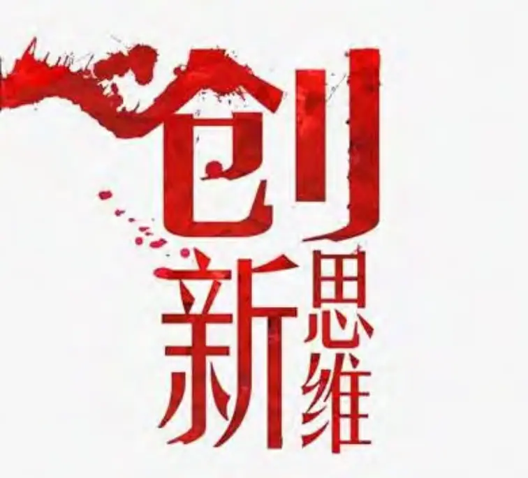
所以，你不要认为这个雨水总是往下走。老子为什么感觉不到水很多时候往上
走？因为他整天在图书馆里，他认为水总是在低洼的地方。有太阳的时候，他这个图书管理员会不会出来？不会，他会不会到有很多森林的地方，去体会这些水蒸汽？不
会，知道不？他就像现在你们一样的，住在空调房里面。图书馆管理员是什么职务，
大家知道吗？我看电影，当时他要做国家图书馆管理员的时候，经过了很长时间的审核，不是随便进来当上的，至少相当于现在的部级干部。
那么这个水蒸汽慢慢往上升的时候，这个时候你会发现天上开始出现云了，一旦
云越来越多的时候，这个时候水要做主了。这时，太阳与云的矛盾就越来越大，这个
时间就又会起风。所以，你有没有看到这个天空有很充足的太阳光，然后一团云在那里就是不动，有没有？没有。云它能够暂时停留一段时间，马上这个矛盾激化，风就
要起了。所以每天风，雨，阳光在轮流做主。
二、上善若光，若水，若风
那么，现在大家既然知道阳光、空气和雨水是三个视角的话，老子说上善若水，
由此你应该想到什么呢？你们的回答将决定着你这一生有没有创造力？由此你应该想
到什么？
（不仅仅是想到水，也能想到那个阳光和空气。）
既然水，阳光，空气是三个视角，它们具有平等性。那么上善若水，我们至少也
要想到上善若风，上善若太阳，是不是？你能不能说水就是唯一的最高的善，能不
能？不能。那大家想一想，当你这么一思考的时候，你创新的方向，那个论点是不是出来了，所谓创新就是你要想出来一个东西，再跟老子争斗，你一定要争，知道不？
所以老子说不争，你觉得如果你真的信他的话，你能有新发现吗？老子说不争，你就
无忧无虑，其实他的意思是说跟他不要争。老子说，你跟其他人争可以，跟我不要
争。因为叫我老子，子的解释叫男人，所以老子叫老男人，哈哈！
所以，现在大家知道如果你真把道德经，当成真理的话，你就会发现你越读就越
老男人，越不争。大家知道，我们跟老子争什么？老子说上善若水，所以我们要跟他
争几个，两个，知道不？就是你不能只争太阳，也不能只争空气，这两个都争，才没
有私心。比如分东西的时候，你不能只是你分呀，我也要，还有他也要。你看，当你说我也要，他也要的时候，就表现出私心没有了，是不是？
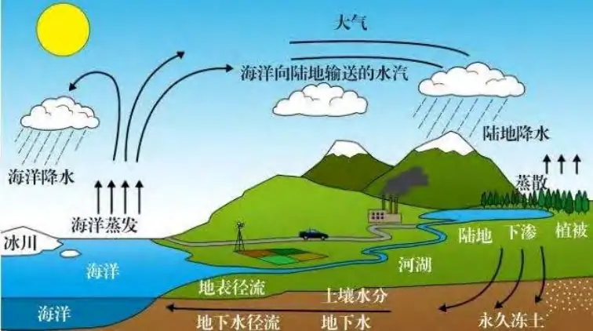
挺有意思。所有，你要跟老子争上善若水。既然水跟阳光、空气是平等的。也是
说缺了风、阳光，水能存在吗？这个老子显然不懂，对老子说，水总是往低处流，一
直流到大海，流到大海怎么样？最后就不知道怎么办了，老子住的地方又没有大海，他不知道大海。这个时候就学习李白的，黄河之水天上来，但是天上的水又从哪里
来？这个时候，我们又说从大海里面来。所以，就说太阳晒那个大海，是吗？但是有
些地方比如亚马逊平原没有大海，那些森林里面没什么大海，怎么突然之间下雨？若
说这个黄河之水天上来，可是我们后面那个山上的水从哪里来？
老子说这个我搞不清了。其实不仅仅是大海，地面上所有水，不仅仅是江河湖
海，还有植物，特别是植物，太阳一晒那个树叶水就出来了。你到外面晒太阳，你皮
肤不就出汗吗？就是水，知道不？所有植物、动物都是一样的，特别是植物都是一样
的，一晒它的细胞水就出来了，这个水叫做呼吸，听懂了吗？另外也叫排泄，也就是森林的蒸腾作用。太阳一晒森林就挡住了阳光，那个太阳不能晒到地表面，那表面还
是冷冷的，那这个雨怎么上去的？
（太阳一晒那个植物就把水蒸发掉）
为什么蒸发掉？因为它有矛盾，因为太阳晒的时候，植物细胞的温度上升，它要保持平衡就要水来调温。现在，大家知道你在原始森林里面，刚刚有太阳，突然之间
下雨是植物参与的自循环的一上一下。
三、“上善若水”是要解决什么矛盾
其实，地球上的水循环绝大部分不是从海里面吹到其它地方去，绝大部分都是有
森林的地方它有一种自循环一样的，明白吗？你想想，如果这里的水都要从海边飘过
来的话，代价大不大？听明白了吗？
所以，现在你就知道这个植物，生物界对地球就相当重要。一旦这个地方的生物
圈被破坏了的话，这个水就只能从哪里来了呀？只能从海里面来了，是不是？这个时
候代价就巨大无比，所以能不能风调雨顺呢？
（不能）
不能！
那么上善若水告诉我们什么？从3开始就告诉我们要跟老子争，那老子告诉我们水争不争？
（不争）
大家说水争不争？如果大冬天你到河里去游泳，你发现水争不争？水一下子就把
你的什么拿走？
（热量）
那个时候你觉得水还温柔吗？很有意思！那老子为什么觉得水不争呢？他的水是
什么水呢？
（液态的水）
中原的水，一年四季都是（液态）
（估计他都是坐在炕上）
那他有没有讲冬天的水？所以你看到道德经里的水有没有讲冰？
（没有。）
但是易经，周文王的时候，写水跟老子写的水是不是不一样啊？也就是老子有没
有经受过人生的很多矛盾？
（没有。）
而易经里面是充满了矛盾、充满着冲突，可是老子的道德经里面描述的是中国人
理想的世界，老子知道人与人之间交往就有什么？
（矛盾）
你们家和我们这家隔着一条河，河里的水是清清的流，你们家住在这边，我们家
住在那边，要不要往来呀？
（老死不相往来）
老死不相往来！你们家的人自生自灭，我们家的人也自生自灭，我们彼此不要互相去干扰。老子有没有说要发展教育啊？
（没有。）
道家绝对不讲教育。一讲教育就有场了，就有摩擦了，是吗？这时就有矛盾产生
了，老子的意思就是大家都做水。如果上善若水，上善若阳光，上善若空气的话，到底哪个是上呢？是不是就冲突了，矛盾了，这个时候我们就要用321智慧的哪个智慧来呀？
（要用2了。）
对，因为你已经产生了矛盾了。大家知道所有的创新一定有矛盾来，知道吗？如果你创新产生出来的东西没有矛盾的话，叫不叫创新呀？
（不叫）
如果你创新出来的东西跟别人的不矛盾，叫不叫创新呢？
（不叫）
不叫创新。所以，老子说不争则无人与你争，是什么？其实不是不争，知道吗？
是啥意思，我们明天再讲。
我们今天先讲老子的第1个错误，我们的论点已经出来了，所以由3来引导出论点，使用的是直观的方式，明白吗？懂吗？那么现在要证明这个论点，由谁来解决？就要回到现实中。什么现实呢？现实是矛盾，现实是残酷的，知道不？老子没回到现
实。我们回到现实，就是要二，要矛盾，就是要过程逻辑，听懂了吗？要过程逻辑，你自然会想到上善若水，上善若太阳，上善若空气，这个时候有3个上善，你就会想到不同的上善解决什么呀？
（不同的矛盾。）
不同的矛盾。不同的上善是由不同的过程逻辑产生的，懂吗？
不同的上善是过程逻辑处理不同的矛盾，就产生不同的解决方案。这时候，你为
什么要学水呢？为什么要学上善太阳呢？为什么要学像风呢？你看，有位同学前天发了一个视频（老师手舞动，模仿那位同学前天发的视频动作），像什么？D老师！
（哈哈哈）
像不像水？太阳？疯像什么？
（像波浪）
像风！风的太厉害就像什么了？就像什么子啊？风的太厉害了就是疯得生病的男人，合起来就叫疯子。
（哈哈）
所以，疯子只能用来形容男的，女的就不叫疯子，因为女的本来就是情感型的，
你干嘛叫她疯子呢？
（哈哈）
男人才叫疯子，所以叫子。你看有没有疯女啊？如果你是疯女人的话，那个疯的
程度就很大了，知道不？如果男人表现出来，像那个场里面的那个风。
所以，我们从321的2的智慧，你现在就要去查上善若水，是解决哪一类矛盾。上善，就是核心竞争力。也就是说，人要学水是解决哪一类矛盾；人要学太阳是要解决
哪一类矛盾；人要学风是要解决哪一类矛盾，是不是？所以，你不要认为疯子没有智
慧啊，有的时候就要做疯子，是吧？你们要多看看电影，电影里面有很多智慧就是扮
成疯子，知道吧？
（大卫就这样）（哈姆雷特也是扮演疯子）
中国很多电影里面就都有扮演疯子，疯子是解决矛盾的，是个智慧。所以你不要
认为疯子就没智慧，合适的时候你要做疯子，你要做愚子，是不是？
（傻子）
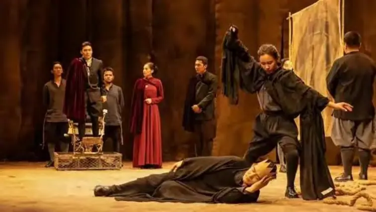
这个时候，大家就知道了，我们从2就开始走向了1。我们要想明白至善是有三个角度，至善是解决矛盾，善是解决晕痛苦三个角度的矛盾。
（嗯）
这时，你就要321合起来，1就是有整合的味道。大家想一想，你学水，水是几号位啊？
（2号位）
对，2号。这个时候我们回到天上，天上要下雨了，水要发生改变了的时候，它是处理什么跟什么的矛盾啊？
（光和风的矛盾）
风和太阳的矛盾，对。大家想一想，什么时候风和太阳有矛盾呢？你要是在田里
干活儿，你就知道。如果太阳晒得要命，又没有起风的时候，你是不是觉得很矛盾
呢？太阳一晒又没有风能搞很久吗？
（搞不了多久会中暑的）
这个矛盾只能由谁来解决呀？
（雨）
对，没有风，太阳一晒，水就是从哪里出来的呀。老子以为水很聪明，其实，人
跟水一样的，无所谓聪明和不聪明。昨天我们打网球的时候，太阳不大，但晒着又没
有风。大家知道有太阳又没有风，哪你的体温就不停的怎么？
（升高。)
不停的上升，所以这汗就流个不停，这就是水是为了解决什么的矛盾呀？也就是
为了解决阳光和风的矛盾。阳光是天的什么视角啊？
（粒子。）
风是天的什么视角？
（场）
场视角，这时你就会知道。人要像水，这时你就知道人要像水一样的生活，就是
要解决人的粒子和场的矛盾。
这时你就知道上善若水，学水要怎么学。你在公司里面，你这个粒子跟场发生矛盾的时候，本来是有几种解决方案？
（两种）
本来它是有三种。你可以改变场，改变场的这种人叫什么呀？
（革命者。）
叫MZD。你可以改变粒子，改变粒子的叫什么呀？
（ZEL）
改变粒子就是改变你自己这个人，知道吧？第3种就是改变你的运行模式，是吧？大家想一想，在老子的世界观下面，粒子可不可以改变？
（不可以）
不可以叫什么？
（本性难移）
对，知道不？粒子不能改变。那粒子不能改变的时候，在老子那个时候，那个世
界观下面，场能改变吗？不能！中国人不能改变场，场就是大自然，是吧？你能改变大自然吗？
（不行。）
四、上善若水是中国人回避矛盾的总指导
不行，知道不？所以在老子下面也好，整个中华文化也好，它的主要矛盾，最重要的矛盾是什么？是粒子和场的矛盾，是吧？
（嗯。）
是粒子和场的矛盾。因为粒子不能改，场也不能改的话，那只能改什么呀？
（波。）
只能改波，就是改变你的生活样式，有的时候你做气体，有的时候做水蒸气，有的时候你做水，有的时候做冰，是不是？
（冰墩墩。）
根据不同的场，然后你就做不同的水的形态，听明白了吗？
所以现在大家知道上善若水对于中国人来说，是不是比作太阳和作风要好多了
啊？
（嗯。）
所以，现在你就知道了上善若水解决中国人的矛盾是挺好的，但是如果给西方人
讲上善若水的话，他会觉得怎么样？
（太保守了。）（疯子。）
他说你这个人还存在不？
（不存在啦。）
对。这是什么意思呢？老子说人还是要做人，人有道，有德。但是，这个“德”
的表达形式要不停得怎样呢？
（变。）
对，不停地变化。所以如果别人踩你一脚，你可不可以发脾气呀？
（不能回击。）
对，所以你能不能跟场里面的发生冲突啊？能不能？
（不能。）
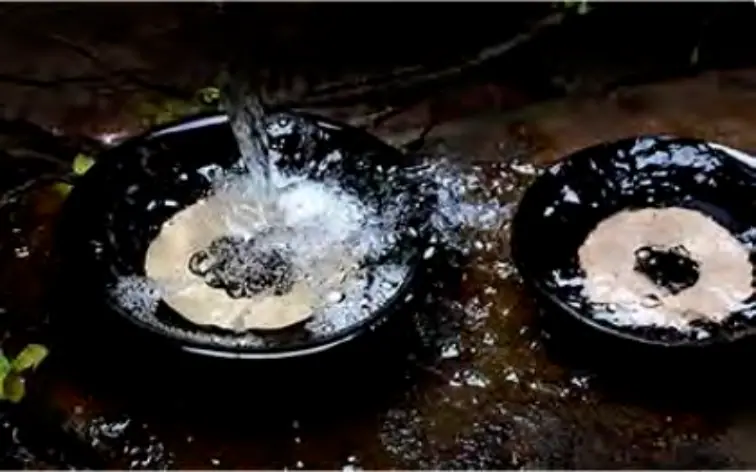
不能，知道不。别人踩你一脚的时候，你要撕开自己，痛就得痛。然后过一段时
间之后，又要把伤口怎么啊？再自己缝起来。
（自己缝合。）
懂了吗？这个就是水。
你们不是说要写诗吗？你做水呀，你刚被恶人捅了一个伤口，你竟然几秒钟之
后，又缝合起来了，然后再默默无闻地继续往下流。
（怎么感觉像暗恋了，呵呵。）
（哈哈哈。）
挺有意思吧。所以“上善若水”，你就会发现老子就觉得水有没有跟其它人争呀？
（不争。）（没有。）
他觉得水利万物，水一心一意服务人民。
（利他。）
叫做全心全意服务人民，它有没有自己争什么东西呀？
（不争。）
他觉得水不争，对。你看，如果你挖一个口子，水就顺势往下面流，是吧？对。然后你要它从上往下奔，奔得粉碎，它有没有说：“好痛。”有没有呀？
（没有。）
没有，它过一段时间又汇到一起了。你看，这个就是水，你刚刚把它扔到下面，过段时间你去舀它，它有没有说“你刚才扔痛了我，我现在不跟你来了。”会不会？不会。
所以他说水有七种善良的品格，其中一种就是什么呀？就是很讲信誉的。什么意思呢？就是很有规律的，而且它是很仁爱的，它没有二心，知道不？对。所以中国人
很喜欢做水，但做水就要做得很什么呀？
（很辛苦啦。）
做水就做得很辛苦，是吧。然后作来作去，做水能不能做成啊？能不能？
（不能。）
不能。为什么呢？因为水是不是真的就像老子讲的那样子做水呀？
（不是。）
水真的是无争吗？
（有争。）
水根本不是像老子说的那样很温柔，水很温柔吗？大家知道下冰雹的时候，你觉
得水温柔还是不温柔啊？
（嗯。）
明白吗？这是老子对水的片面的肤浅的理解，是不是啊？对。水可不是像老子这
么样理解的，知道不？
如果来一个类比，大家就会知道。阳光、雨水和风在SJ里面，阳光总是类比谁呀？
（TF。）
SF。水呢？水类比谁呀？YS。风类比谁呀？
（SL。）
SL，对。所以你要有创造力能不能在家里呀？
（要出去。）
你要有创造力在家里也可以，你在家里要放几个电风扇呀？
（三个。）
对，要有电风扇，你看我这里经常有电风扇在吹，这个时候我才有创造力，那个灵感才出来。因为我知道灵感来自于什么呀？来自于疯疯癫癫，懂吗？哈哈。
好，那么大家说水是YS，YS是不是只是温柔啊？
（没有。）
没有。YS不温柔的时候像一把刀子插在那些人的心脏里面，插进去的时候还要什么呀？
（转一转。）
还要转动，知道不？而且要转三轮，知道不？哈哈。你们真的没读过SJ，他有的话真的连牛都踩不烂，还不是牛，钢刀都斩不烂。所以很多的JDT对YS的认识都是错误的理解，以为YS就只是什么呀？
（绵羊。）
羊羔呀、温柔呀、什么话都好说呀、这样也可以，那样也可以......YS真的是这样吗？不是的！你们去读SJ，YS各种各样的脾气都有的，知道不？他发起脾气来就什么？
我们人类没有哪个人发起脾气比他发得厉害，知道不？他发过的脾气，比如对他的徒弟说：“魔鬼，走开！”
你们懂吗？他叫“魔鬼”两个字啊！如果我们跟朋友说“魔鬼”这两个字，这个朋友这一辈子还会跟你见面吗？
（不会。）
对。还有，YS将来有更大的脾气，大家知道吗？所以你读SJ可不可以只读现在的YS呀？你要看将来的耶稣，知道不？那个发大脾气的YS会做什么？杀杀杀！知道不？对。所以你也知道水要杀人的时候通常要在什么情况之下呀？
很极端的情况下，是吧？像那个冰雹啊。
（洪水的时候。）
在极端的矛盾的情况下的时候可不可以温柔啊？
（嗯，温柔不下来。）
不能温柔，知道不？对，大家懂了吗？冰雹是什么情况下啊？冰雹是极端的情况
下，那个矛盾处理已经没有缓冲的时间，不能再用波和场了，只能用什么呀？
（粒子。）
只能直接用水的粒子状态去砸下来。
（砸下来。）
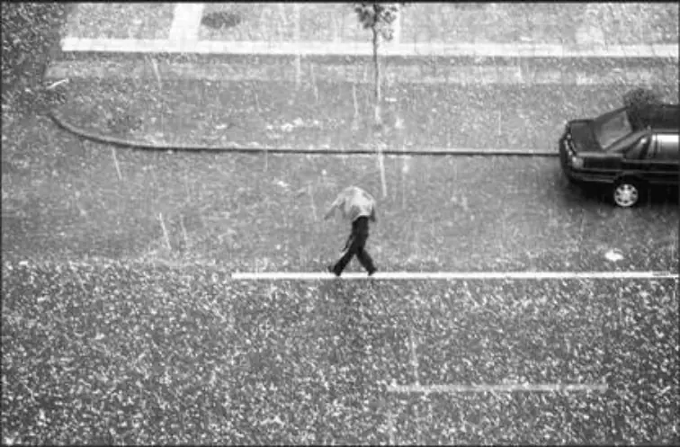
所以老子只看了水处理矛盾的时候总是用什么状态呀？
（波。）
总是用波的状态。他忘记了水在处理矛盾的时候也可以用粒子状态，听懂了吗？
（嗯。）
水还可以用什么状态？
（场。）
对，还可以用场的状态。大家知道用场的状态是一种惩罚性的，知道不。是什么
呀？
（山洪暴发。）
用洪水，还可以像干旱，让你们这个地方有没有水呀？
（没有。）
一点水都没有，知道不？所以现在你就知道我们中国人总觉得“好雨知时节”！
但现在还有吗？现在不是好雨知时节了，而是好雨已经很少了，是吧？经常需要雨的
时候，雨来不来？
（不来。）
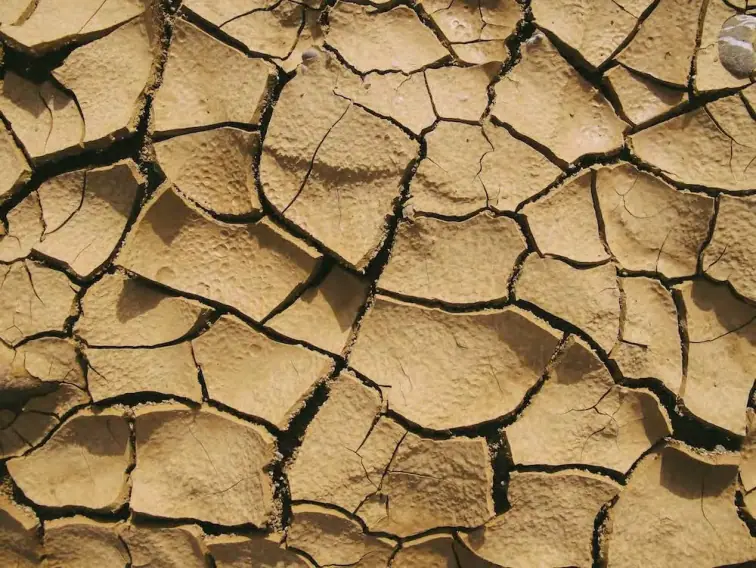
不来！然后不需要雨的时候雨就来了。
（泛滥。）
对。所以我们这些唐诗，所谓诗歌艺术都是描述理想的精神世界，是吗？
（嗯。）
“好雨知时节”，而现在都是乱七八糟了。
所以现在大家知道“上善若水”只是解决什么矛盾呀？解决粒子和场的矛盾，那么如果粒子与场的矛盾老子只是要我们学水的话，我们这个人能不能有创新啊？
（没有了。）
个人就没有创新了，知道不，懂吗？所以现在你就知道水在大自然里面，它能够
产生很大的创新吗？它很难，知道不？也就是说水要变成氢气和氧气是不是很难呀？对。
但是人可不可以这样做啊？人不能。知道不，懂吗？那人为什么不能呢？因为人
在场里面的时候，比如你在场里面，你原来是名基层工人，但是你很有领导力，很有
核心竞争力，你本来应该做副厂长，是吧？对。但现在老子说要你什么呀？
（不争。）
要不不争！知道不？对。所以你在那场（厂）里一不争的话，你就是老老实实地
要你干基层你就干基层，你在那里就磨了又磨，磨了几十年，你还是在磨，是吧？最后那个老板说：“哇，把这个人才埋没了。”是吧？
大家有没有想到我们中国人就是这样啊，明明知道怀才不遇，可是因为学了老子
的《道德经》要什么呀？
（不争。）
要不争，对。所以最后一辈子就怎么了？
（碌碌无为。）
对，就碌碌无为了。知道不？对。那么老子为什么是这样呢？因为他觉得一争的话，你还能在场里面生存下来吗？
（回避矛盾。）
你一争就跟场里面的人有矛盾了嘛，你就有什么的危险了？
（被踢出局。）
生存的风险嘛，所以道家里面最重要的价值是什么呀？谁能跟树一样活得最久
了，谁就怎么？谁就最厉害！至于活得怎么样？老子觉得重不重要啊？
（不重要。）
不重要！对。重要的是谁活得久，是吧。
（嗯。）
比如耶稣只活了30几岁，要是在中国的话，会讲：再厉害也就是30几岁就死了，这有啥意思，是吧？在中国如果你说：这个数学家伽罗瓦可惜了，20岁都没到。更重要的是天伦之乐都没有，还没结婚就跟人决斗死了，这有啥意思啊？虽然他发明了群论，可是500年后才被人用，这个人没什么意思。
大家知道老子有这种想法了，所以他才说你这个人是要有用还是没有用好啊？
（无用之用，方为大用。）
对，他说无用之用才为大用，就是你没有什么用，别人才不会用你，因为他要用
你的时候，你就完了，是吧？每用一点就切了，每用一点就切了，知道不？所以他举了例子，他说那个没有用的树才活得怎么样？
（活得久。）（活得时间长。）
活得久了。所以现在你才知道中国人的价值是求生存，那么它最重要的矛盾就是
粒子跟场的矛盾。
（跟场的矛盾。）
但是大家想一想，活得最久难道就一定要像水一样吗？不是！知道不，懂吗？你
要活得久，有的时候要像水，有的时候要像太阳，有的时候要像风。知道不，懂吗？
你看啊，你在一个场里面，你是不是以为你听话就活得久？你不要以为你听话，你就活得久！大家想一想，什么情况下，听话的人活得久？这需要场比较稳定的时候，是不是啊？没有裁员的时候，知道不？那一旦面对未来的入侵的时候，要裁员的时候，首先裁哪些人呢？
（裁默默无闻的呗。）
裁那些默默无闻的听话的人！因为这些人对场里面的贡献会大不大呀？
（不大。）
裁了他们有没有影响啊？
（没有影响。）
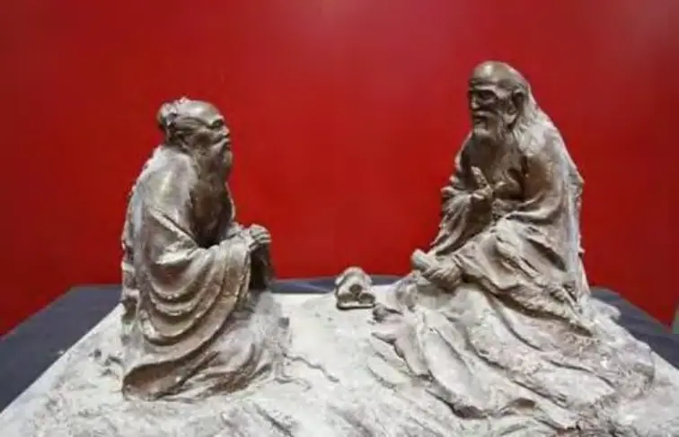
没有影响，所以老子其实自己就是个被裁的人，是不是啊？
但是他自己知不知道啊？老子其实一生并不怎么得意。大家想一想，像老子这样的人在今天的中国，按照我们的市场价值，是不是应该也当个副总理是不是？对。要相当于现在的一个姓W的啊，不是WDS，是另外一个W啊。
（WQS。）
对，至少要当一个总顾问是吧？对。但是老子很显然不得意，是不是？所以老子自己采用了什么方式啊？采用了自己创新是吧？
（嗯。）
那创新了之后，现在大家都知道，老子是不是就活下来了啊？
（嗯。）
老子就活了嘛！老子死没死啊？
（流传千古。）
老子没有死嘛！所以，现在你就知道他本来出关的时候，他都不愿意写，他后来想一想，我还是要活下来是吧。
（留下五千字。）
对。所以老子的真正智慧有没有告诉大家？没有！他说你们那些人做水，他要做什么？
（他要做阳光。）
他要做太阳，知道不？现在大家就知道老子是亿万中国人的太阳，是不是啊？所以你们这些人都被他骗了嘛！他要你们做水，可是他自己做什么呢？
（太阳。）
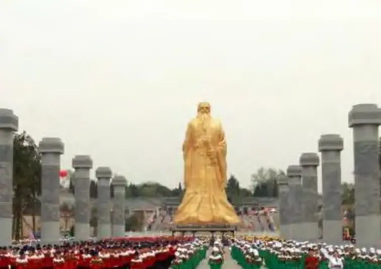
哈哈，他要做太阳，知道不？所以大家都知道所有写书的人都是什么？都是欺骗者，知道不？
明白吗？就是你不能只读他的什么呀，你不能只读他的文字，因为文字是几号位呀？1号位。
（1号位。）
你还要读他的什么呀？读他的生命历程，你才知道他是什么呀，每个人都是自相矛盾的，是吧？你才知道他真正隐藏在后面的是什么。所以呢，我们说老子的上善若水，他讲出来的是想要我们在场里面很好的生存下来，但是他哪个预设错了啊？
他的预设就是什么呢？他的预设就是每个人的“道法自然”，他的预设是每个人的粒子是不可改变的，明白吗？但实际上他自己改变了没有啊？
（他自己改了。）
他自己改变了，知道不？对。他自己一改变了之后，你看老子他自己是不是形成了一个“老子场”啊？
（都跟着他来了。）
听懂了吗？所有研究老子，所有读道德经的人，自然就是形成了以这个太阳为中心的一个场嘛，是不是？对。然后这些人都是围着这个太阳，围着老子在那里发什么呀？
（发癫。）
发癫！叫做“起疯：，明白了吗，哈哈。对！大家有没有觉得这些人发疯就是：老子这句话怎么解呀，都是这样！是不是啊？你就看到微信群上面他就是这样的，懂吗？挺有意思吧？
上善若水，它的来源大家知道了，是吧？就是在特定的情况下处理粒子波场的时候，如果我们认为粒子和场都无法改变，这个时候就只能什么了啊，只能像水一样的变来变去，是吧？
（随波逐流。）
对。其实不是水想住在下面，是吧？你以为水真的想处在那个什么很脏的地方吗，啊？
（是因为粒子和场都固定了。）
因为它也是没办法，知道不？哈哈。懂吗？对。大家知道，水如果住在很脏的地方的时候，他就渴望着谁来帮助他呀？
（太阳。）
太阳！知道不？太阳快来吧，一照的话，那个地方就变成什么了啊？变成泥土了嘛！是吧？老子有没有认识到这一点啊？没有！所以老子他就不知道那个低洼之水被太阳一照的时候，神州大地出来了红太阳是吧？牛鬼蛇神被榨干，剩下的全是肥料，是不是啊？这个牛鬼蛇神——就是你为什么觉得水一榨干了之后，剩下的就是肥料，原来水跟这些肥料在一起的时候，你又觉得很脏啊，这因为什么呀？
因为有水、有肥料在一起了的时候，有什么东西就会产生呢？
（微生物。）
那些微生物就会产生，知道不？但是如果你是一条鱼的话，你有没有觉得那是脏的地方啊？
（不会。）
不会！你是一条鱼的话，你就会更喜欢那些东西，喜欢那些水啊，喜欢那些肥料，是不是啊？因为它滋生了什么？滋生了一些微生物，这正是鱼想要吃的！知道不？
（食物。）
所以老子实际上是因为什么，他总是用人的观点去看什么，看脏和不脏是吧？对，听懂了吗？对。那如果你要是生病了的时候，医生说你现在生病了，要以毒攻毒。你身体进去了五种病毒，这种病毒只有臭水沟里的那种病毒可以来攻击他们的时候，这个时候那臭水就变成什么了？叫做什么呀？
（葡萄糖？）
M开头叫什么？
（美食？)
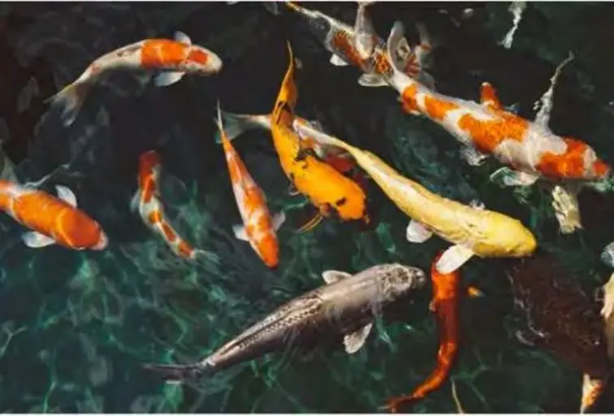
M开头，叫Medicine，知道不？
（良药。）
叫药知道不？对，你看。但老子很显然不懂这些，是吧？听明白了吗？对。所以上善若水，现在大家知道，上善若水只是在特定的角度下，特定的时候处理特定的矛盾。如果你把它当做全部，当做真的做人的最上等的品德的话，那你这个人就什么呀，你这个人反而会带来更多的痛苦，是吗？
第一，如果你整天像水一样生活的话，那你的人生就会产生越来越多的什么啊？（痛。）
晕！知道不？对，晕。越来越多的晕和什么呀？和苦，知道不？对。大家知道像水一样的生活是很苦的，是吧？逆来顺受啊、踩了的自己要缝起来呀，是很苦的是吧？
如果你一生都是这样去适应各个场啊，适应各个环境啊，这里碰了一下还不能说是不是啊？那里被别人骂了一下不能反抗，是不是窝囊啊，背上写着个什么字啊？
（忍。）
忍！心上就要架着一把刀，随时割你一下，这个叫什么？叫苦，是吧？
中国人就是苦呢，知道不？你有没有觉得呀？中国人的苦呢？还有另外一个字来形容叫做贫穷 ，是吧？叫做穷苦啊，所以我们说穷苦的大众老百姓，王老师要哭了的，知道不？
（深有感触啊。）
我们以为什么呢？我们以为我们贫穷是因为什么啊？我们以为我们苦是因为没有钱，其实不是的，知道不？懂吗？现在大家知道了吗？贫穷不是什么？就是你苦，不是因为贫穷，不是因为你没有钱，为什么呢？今天的中国人有没有钱啊？
（有。）
但是我们是不是比以前更加苦啊？啊？
（对对对。）
听懂了吗？对。所以苦是什么？苦是因为我们不知道解决什么呢？解决苦的智慧！我们缺少这个智慧知道不？贫穷是因为你缺少智慧。
大家说为什么贫穷是因为缺少智慧啊？因为我们有个价值观，我们有个价值论，叫做什么呀？价值的一号位叫什么？叫智慧附体！听懂了吗？所以你有了智慧，还有什么东西没有啊？
（都有了。）
都有了。
好，那这个时候你就知道什么？我们应该讲一堂课，叫上善如太阳，是不是啊？对。还有上善如风。老子说水是无私的，水自己不要什么东西，那大家想想，水不要的话，太阳要不要啊？阳光有没有问你要东西啊？
（没有。）
没有！是不是？然后那风有没有问你要东西啊？
（也没有。）
没有！但是风啊、太阳啊、雨水有没有给你造成麻烦啊？
（有。）
有啊，多的很，知道不？懂吗？你看冬天要是很冷，没有雨水还好，有水的话要冷得什么啊？
（更加冷，湿冷湿冷的。）
你看，同样的温度，零下20度，如果有水的话，当然那些水都结冰了，知道吧？比如说，零下一度二度左右，在北方零下二度根本不冷，知道不？可是南方的零下二度的话，哇，那你冷得什么呀，冷到骨头那里面去。
（穿再多衣服都没用呀。)
对，这个时候你觉得水好不好啊?
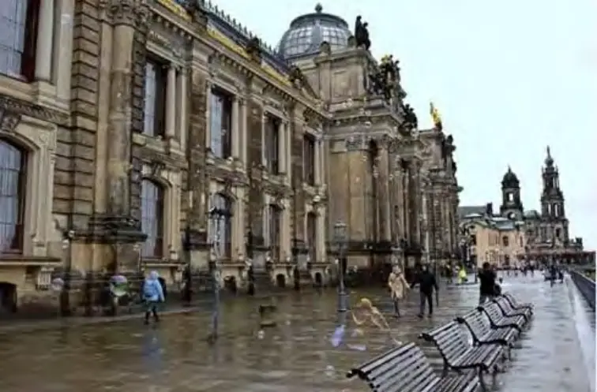
(不好。)
不好，对。所以呢，这个好不好啊，老子来把雨水啊、空气啊、阳光啊这些东西什么，都用人的需要来讲。但是呢，实际上因为他对大自然的观察，第一很片面，第二很肤浅，是吧？对。所以他得出来的东西能不能真正指导我们解决人生的晕痛苦啊？
（不能。）
你去看一些档案也是,看报告上面介绍某个书记某个人全是这样的,是不是？哪年
哪月哪日出生在哪个地方场,哪年哪月在哪个小学读书,哪年哪月上中学,然后就在哪个工厂,然后在哪里调到哪个地方当县长,这也是场啊,对!调到哪里什么,调到哪里什么,
最后呢?哪年哪月哪日到哪个小四方盒子里面去了,是不是？
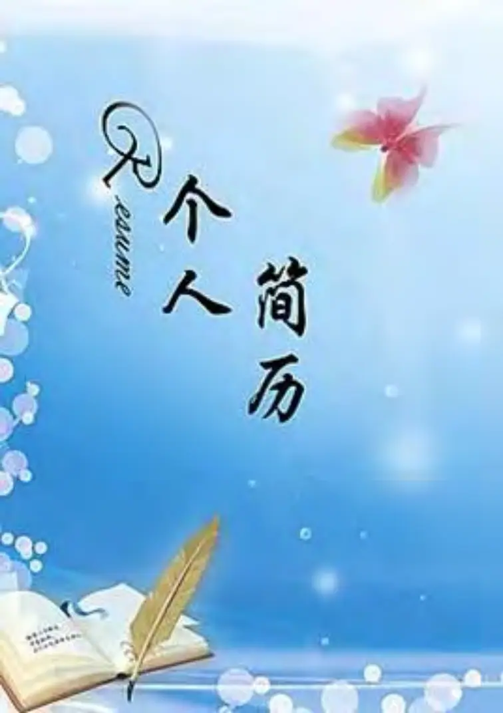
挺有意思吧!就是全以场来命名你,那你觉得你还认识这个人吗?这个人还存在吗？
听懂了吗？没有吧,也就是说中国人是没有粒子的人。
那有粒子的人就是那些欺骗的人,就是你们要作水,我作太阳,知道不？所以中国允
许不允许有许多太阳呀,不允许!所以中国就是你们作水,我作太阳,我想杀你时我就杀
你,我不给太阳时就不给太阳,觉得很在意思。
其实太阳能不能自己单独存在呀,太阳能不能啊,只要是风跟云联手起来时,那是暗无天日, 听懂了吗？风和云一联盟的话太阳根本就不起作用,现在就知道,我们有的时候在南方在湖南一年中的阴雨天,就几十天看不见太阳,那地呀还有人的心情就潮上加
潮,好象没有出头之日,所以太阳也不能自己独立做太阳的。
好,你们有什么问题？下一次用不用谁来讲一讲,你觉得上善太阳,你觉得人应该在什么时候做太阳？大家知道做太阳不容易,其实王老师就是做太阳,太阳是得罪人的,是
吧!太阳是最遭人骂的。你没有方向时,就说太阳怎么不出来,太阳接着几个太阳,又说
太阳怎么这么厉害,晒得我要命,就找个地方躲一躲。
但大家知道一号位就是一号位,一号位能隐藏吗？是不能隐蔽的,是照在山上,然后
所有地方都能照到,一号位是最难做人的,看老毛做红太阳是不是很难做呀,一些人就骂
他,一些人就喜欢他,是不是?
我今天早晨在讲,中华民族这个文化首先要改变,真的还要出来好几个毛泽东,一个
还不行,知道不？为什么呢？老子说,不争无忧,这句话就影响着整个民族的文化属性,给每个人内心都打上了一个烙印,不争不争,不做出头鸟,不与前人矛盾,只讲好话。而
且老子还说欺骗人的话,不争才无人与之争,这多好呀!
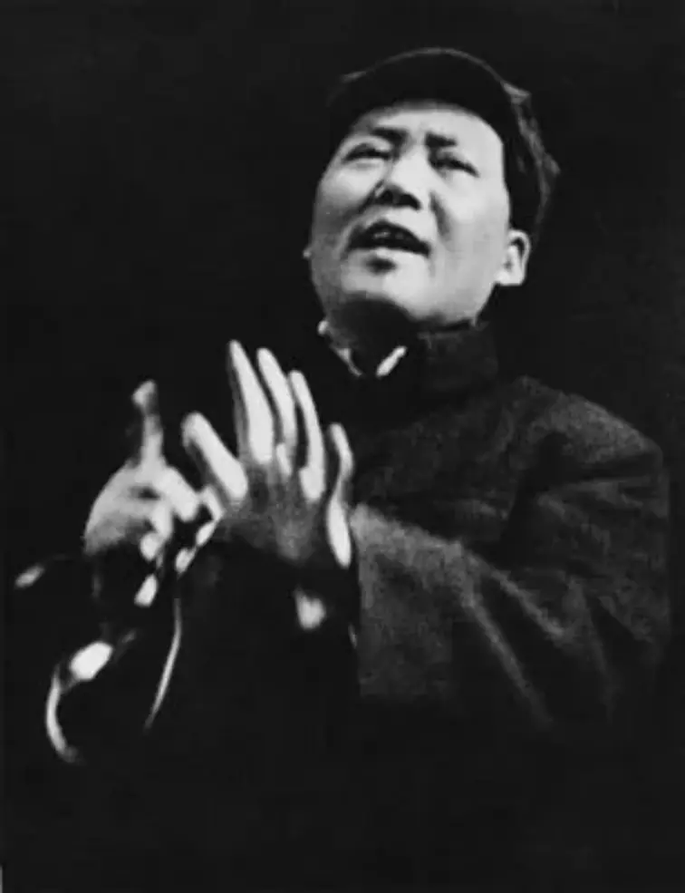
为什么呢？就好象我要东西,我有个方法,比如我想拿那块金子,但我不需要跟别人去抢,我有一个方法,叫老子之法,可以让我不跟别人发生矛盾就可以直接拿到,中国人
是不是喜欢这个,这个就叫和谐之法。
(分一杯羹)
什么意思?就是可以和和谐谐,可以不跟任何人发生矛盾得到自己想做的事情,可以在绝对和谐的状态下跟周边人保持和谐,可以心想事成,这是中国人最高级的理想。
大家知道为什么会有这种理想,因为老子还有一条理论,叫道法自然,什么意思呢?
就是你道法自然,我道法自然,大家都在谁的掌管下运行呢?
道的掌管下运行.那么道有没有矛盾呢,老子说道是完全和谐的, 道的运行在老子那里有没有矛盾呢?
(没有)
没有矛盾，这个就是老子道德经的核心错误，当然这个错误在今天科学的发现才
知道这是错误的。道德经几千年以来,为什么很难进入民间呢？就是老百姓为什么不按道德经生活呀,该抢的还是要抢啊,因为道德经本来就不是现实的智慧,他是对现实做了
无限的简化之后,只能处理某一类矛盾,知道不？
所以道德经运用时常常只是在特定情况下,特定的场合才觉得能解决一点矛盾,这
个刚才已经讲了.但人生的矛盾绝对不止是老子所体会到的那一点点矛盾。
(老师,有个想法,比如我们想批判或者创新,有一种批判是脱离原文的批判,有一种是基于原有已定的创新或扩充)
这个东西很简单,你说脱离原文呢,就是在你新的东西产生的时候,你预定要给已有
的东西要冲突才会产生,否则你产生出来的是抽象的,知道吗?
就是我说从三视角是不是可以推一些很抽象的东西出来呀,但是那些在现实中有没有内容呀,没有.所以这个时候我可以从太阳雨水风推出来有时候要做水,有时候要做太
阳,有时候要做空气,但是一旦你写出来了,这个时候无形中与谁产生了冲突?
无形中与老子产生了冲突,那这个冲突什么时候诞生呢？读者.在读者的心中,你的
理论你的智慧被揭示的过程中,必定要产生斗争,对于你个人来说,有没有产生争啊？
(没有)
但是如果被市场接受的时候,如果没有争的过程,你产生的能保留吗？不会的,明白
了吗？
(这样我觉得老子的书可能是被篡改了,可能是基于统治阶级的要求,让这么写的。)
真的还有这种说法,是统治阶级的需求.因为在中国历来作太阳的不多,平民百姓你
想不想作太阳?你不能,你生下来龙生龙,凤生凤,你生在新来村就是与那些瓦顶组里的
那些瓦打交道,明白了吗?
所以你最终只能做水吗,逆来顺受,在不同的场景里你就改变你的相,现在你就知
道,水有几种相呀?
(三种)
这种状态下,你作液体作水,风来了就飘一飘,叫做起浪,但是你在湖里面浪有多大作用呀。
(浪不过三尺)
知道不,那么你如果太阳很厉害时,就变成气体了,你要往上面走.然后很冷的时候,
这个场又不一样了,你要缩成一团,不动,这个叫固体.很简单,现在你就知道中国人什么时候会缩成一团呀?
(变成缩头乌龟了)
那鳖就是缩头乌龟,懂吗?当日本人进来时,就要做缩头乌龟,明哲保身,听懂了吗?
那大风一吹时,为什么要摇摆呀,大家想一想,如果风一吹你不跟其他浪一起摇的话,你那个分子就会飘出那个池子了,就会扫到地上去了,你还能存在吗?也是求生存,只
要能生存下来就要做墙头草,听懂了吗?风大,这个浪就是墙头草,就是这个浪过来又过
去。
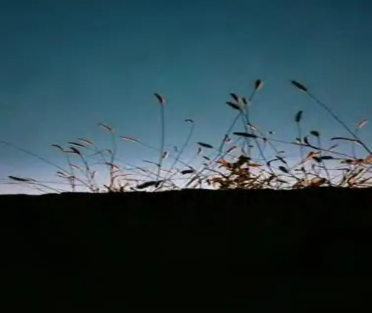
那么太阳一晒往上飞叫什么呀?
闫行长,你在银行里面要表现的精神抖擞,阳光四射,那其他人被你晒得要命的时
候,就汗流浃背,整个银行就充满了活力。
大家知道,太阳一晒就纷纷离场了.这个就是一旦有大的逼迫的时候,中国人就纷纷离开国土,到别的国家去了,这些就是那些有钱人,逃难呀,难民呀就是这种状态。
那这三种生活状态是不是就是中国人的生活状态呀,大部分都是摇一摇,墙头草.今
天政府公告是这样,那马上就认为是这样,那明天又改变了,那真实的情况是这样的,后
天又说,更真的是这样的,你看就是浪啊浪,摇啊摇。
五、没有“名字”的中国人
（老师，您刚才讲的就让我想起之前王东岳讲过一点，他说中国人自古以来根本就没有爱国精神，但他并没有揭示出原因，老师现在一讲我就理解了。因为我们学水
学多了之后，像刚才老师讲的这三个例子...）
我们没有国嘛，我们哪里有国啊？。
（所以有讲认贼作父。）
大家知道，因为国的定义是国民是不是？国民就要有国民特征，也就是中国人要
有什么样的文化才叫中国人啊？我们的文化就是什么啊？（自己生存。）
我们的文化就是上善若水啊，我们就是做水啊，知道了吗？我们的文化就是仁
啊，就是3号位，就是做场嘛，在任何场合里都能跟人和谐，这就是我们的文化。我们
的文化就是3号位，听懂了吗？
（嗯，没有粒子特征。）
对。所以现在你就知道了，在我们国家如果政府不强的话，那就国将不国，知道
吗？所以这个时候大家就要理解在中国当领导人容不容易啊？
（这不容易，太难了。）
非常的不容易！知道不？也就是说如果中国没有强大的政府，如果象美国一样的
搞懦弱的政府很快就分成几个国啦？很快就分成五代十国了，知道不？
（哈哈。）
（老师，这个在国外的话，因为从古希腊的时候开始他们就有公民了，就有公民意识了对吧？）
对。也就是说他们有公民意识，我们没有公民意识，我们中国人的意识就是中庸
知道不？中庸就是什么呢？
（摇摇摆摆。）
对，然后就总在中间，过来一点行，过去一点也行。就总说：算了，没关系啦，
50块钱，多一点少一点都没关系的。这就是我们说的美德。
（MZD抗日的时候也感慨中国的汉奸何其多，成立了伪满州国。）
对。他就是这样的嘛！因为他只是求生存嘛！那你要这样讲的话，从前清朝政府
侵入之后，再往前元朝政府侵入之后的那些人是不是汉奸啊？如果是这样，你凭什么
说RBR进来我跟他们做事就是汉奸？QCZF他们那些人是不是满人？那个时候所有的汉人是不是都是汉奸啊？
（哈哈。）
（所以说汉奸呢！）
汉奸，汉就是汉人，奸就是奸淫。汉人跟非汉人一起做事，就是汉奸。
（他有来历的。）
对，这就告诉我们什么，国民性就是文化属性视角一定要补起来。
（对。太缺了。）
对，我们缺1号位和2号位。
（对，我们没有粒子性、稳定性。）
对。这个不容易，这个真的是很难的。所以你现在就想起来，虽然我们还是在中
国，你会发现现在的中国人跟以前的中国人还一样吗？
（不一样了。最近看一些视频里面就给人感触很深。）
没有1号位了。也就是说我们公认的一些1号位的东西从前可能有，现在没有了，
是吧？这样中国人只能定义为什么？
现在中国人的定义只能由谁给出，你们知道吗？
（ZF吗？）
由西方那个人，知道吗？那个姓海的人。
（海德格尔。）
对，海德格尔说中国的人的名字就叫存在，知道吗？WDS就做王存在。赵明朋不叫
“明朋”，而是叫赵存在。
刚才说了从我们写你的人生记录的时候是不是就写履历，就写存在啊？
（感觉我名字后面两个字就没意义啦。）
对。MP就没意义啦。这些都没意义。听懂吗？
（这太悲剧啦。）
那当然了，这是巨大的民族悲剧是吧？
（所以这反应我们这个社会上跳槽的很多啊，我们很多同学都经常跳槽。）
对，所以现在你就知道，中华民族在人类思想史上有巨大贡献的有很多人吗？
（没有。）
对，没有嘛！那很显然作为一个十几亿人口的民族，伫立在世界民族之林之中他
的责任有没有承担啊？
（没有。)
所以，这个事情要从咱们开始来改变现状好不好啊？
（好。加油！）
你不能就一直做存在了，“明朋”就要“明”起来和“朋”起来，你们想要改名
字的就快点改起来，就要按照这个名字去生活。
（我要改回去算了。）
（我这个名字小时候叫天明，是不是使命就是要做阳光，哈哈。）
（赶紧做啊。）
所以这个就要努力了，因为大家要知道，做太阳和做风是很不容易的。比如做风
就要经常被人骂什么呀？
骂疯子是吧？你看我们家庭就有人说，我们家里出了两个博士，一个在广州，一
个在新加坡。这两个人就象疯子一样在烧自己。这是讲太阳和风。但是，大家知道太
阳是会烧干净的是不是，但是人会不会烧干净啊？
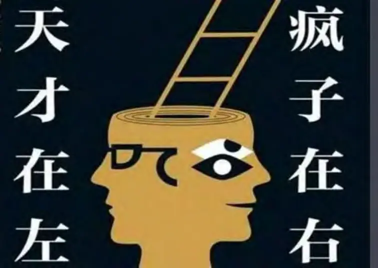
（人不会的，春风吹又生嘛。）
不会的，你看现在王老师的课讲得完吗？
（讲不完！凡有的还要加给他。）
我现在这个体系大得要命是不是？比如，我今天解构上善若水的这个321的解构方
式。那你们是不是可以拿着这个把每个西方哲人都来解构一次啊？
（嗯。这个思路对。）
你看柏拉图能解决什么问题啊？一下子就把他解构清楚了是吧？所以你看这个过程逻辑真的很重要，苏格拉底、康德都能解决什么问题啊？你看他几号位缺，就知道
他哪些矛盾不能解决嘛？
而且如果你真的是做人文的，这个方法让你写论文的话，你一辈子都写不完的，
知道吗？
（老师，这个上面写的还只是天啊，那象地啊、微生物啊拿过来的话...）
那就更多了，这样的话你就成了院士了嘛，别人就跟你做嘛！
（这真的是个宝库。）
所以过程逻辑是不是很重要。
（嗯。对。）
你们还没有参加小波老师跟我一起组织的过程逻辑班的赶紧加入啊，那个只要你
做一些事就可以免费的。我们从十一开始就要专门讲过程逻辑，其实我也一直在讲，
是不是?
因为以前我们解构西方哲学的时候还没有从过程逻辑讲此人的理论能解决哪些矛
盾。有没有讲啊？
（没有讲。）
也是有喽，但是没有具体去讲。
六、师生问对
好。有什么问题吗？
（老师，您刚才提到粒子和场矛盾，您说的也是调整三个是吧，如果只是调整粒
子、调整场...）
调三个就是什么呢？粒子和场的矛盾是吧？但是如果它影响了你的场不能生存下去的时候呢？这个就是场的状态不能保持了。这就好象你要被什么啦？
（要被赶走了。）
就要失业嘛！这个是不是很实用的？比如说要裁员的时候你就知道他会裁哪些人
哪？第一个，没有创新能力的人是不是就要被裁啊？
（那HW不就这样吗？）
对。没有创新能力的人，就是没有粒子性产出的人就会被裁。然后呢，你在场里
面不能象水一样地适应各种环境的人也会被裁，是吗？
就是当场面临着大量的压缩的时候，明白了吗？但是如果你象老子一样生活的时候，象水一样生活的时候，你就会发现你有没有稳定性啊？在那个场里面会稳定地生
存下来，有没有啊？
（没有吧？）
对。没有的。你可能会被随机地裁了，懂吗？但是如果你成为那个企业里面的太
阳，不停地烧，不停地光照大家的时候，他敢裁你吗？
（不会。）
这就是我们说的你要有粒子性的创新嘛！
（对对。）
就是你要做那个场里面的太阳，这个时候他就不敢裁你了，HW的任总就要什么呀，不停地提你的工资。其它的地方也要不停地挖你这个太阳，懂了吗？
就是你无论到哪个场都能不停地进行粒子性的创新。
（在这个地方你讲得他的粒子的稳定性，就是无论在哪个场里面，是不是讲得他
本身这个粒子的核心竞争力要非常地突出。）
对，但是他......核心竞争力也包括三个方面，做水也是提升你的核心竞争力。
但是做水只是告诉你怎么样会用过程逻辑处理矛盾，知道不？水就是处理矛盾的高
手，知道不？但是仅仅处理矛盾可不可以啊？
（不行。）
不行，对于一个场来说，最难被裁的是掌握场的什么？掌握场的方向的人，是不
是？那个做太阳的人。因为熄了他你们在里面就什么？漆黑！
（没有方向了。）
（这能不能解决不同视角的矛盾呢？）
也就是说，因为你处理矛盾是要有个方向指导的，就是形式逻辑也是解决一个矛
盾的，过程逻辑也是解决矛盾，所以这就是矛盾的视角性。你不能说只用过程逻辑去
解决矛盾。也就是说用形式逻辑解决矛盾是要确定方向，但是形式逻辑确定方向的时
候，那里又要用到过程逻辑，听懂了吗？
（嗯，对。）
而如果你只以过程逻辑为主呢，这时候你会发现，遇到矛盾了我知道怎么样去处
理，但是你就不知道你在处理矛盾的时候选哪个，模式选择不知道，老子这里就没有
模式选择，因为他什么？
（他只有一个水。）
对，他只有一个水，懂吗？他只有2号位。
所以，水会解决矛盾。水是解决粒子和场之间矛盾的高手，懂了吗？水会当粒子
波场出现这种矛盾的情况下就做墙头草，在那种情况下就做缩头乌龟，在另一种情况下就逃之夭夭，懂了吗？
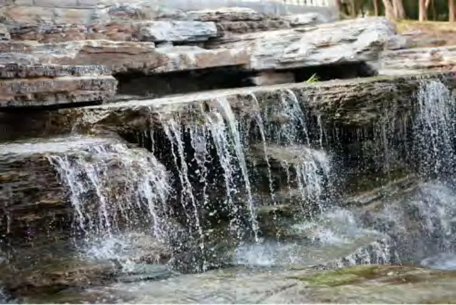
（哈哈。）
对。上善若水就是这个意思，听懂了吗？
（嗯。也就是自然界它总是一个或几个模式的代表，他不是全部的。）
对，自然界的任何一种事物都是具有特定的矛盾解决的智慧，它不具备全部性。
可是人不是这样的，人是所有视角都具备。所以人生下来就比这些事物都痛苦得多
了，知道不？人生下来就有晕、有痛、有苦是吧？
（嗯。）
（那个石头就一辈子都在那里。）
对，石头一辈子都在那里，我们觉得它什么呀，它是粒子，那它有没有晕啊？它
不晕，它就知道“我此生就呆在这里”是吧？它不要去想“我要不要去天上”。不要
的，它的方向就在那里，所以它剩下的就只有什么？只有痛和苦是吧？
（要经受风化…）
有的时候用锤子一砸它就碎了是吧？有的时候被人踢了一下就从山上滚下来，这
是痛，是吧？
石头从来不会晕的，它很稳定。它被放在那里，十年后也是那个样子在那里，是吧？
（嗯。）
可是人不是这样的，你看。所以自然界的东西你去学它的时候你就要知道它是哪个角度解决矛盾的高手。石头是解决波和场的矛盾，它在粒子角度上比较厉害它就要
解决另外两个角度矛盾。
（嗯。所以这个时候我们就要看各种各样的石头了是吧？不能只看一种石头
了。）
对。比如说有河里的石头啊……因为什么呢？因为人生的波和场的矛盾会很多是
吧？因为波有很多个视角，如果波有9个视角，场也有9个视角，那就有多少矛盾啦？
（80多种。）
就有九九八十一种矛盾了，是吧？那八十一种矛盾就要求什么？就要有八十一种粒子的变化性来对待它是吧？
（嗯。有意思。）
所以这个时候你就会发现，有的时候你要像石头，有的时候你要像一棵树，树是
不是也具有静态性啊？
（对。）
但是树和石头处理矛盾是不一样啊？树处理的矛盾比石头是不是更加丰富一些
啦？
（嗯。）
那人呢？比如说人什么时候要像大石头啊，什么时候要像树啊？
大家知道，你的波和场矛盾太大了的时候你就要躲在床上，像石头是吧？
（对。）
但是如果你的波和你的场矛盾不太大的时候，你就可以在房间里面走来走去，像
什么呀？像植物是吧？摇来摇去。挺有意思吧？
（嗯。有意思。）
显然老子不知道这些，是吧？所以呢，在老子那里水就是他道的代表。当然我们知道，在老子的人生中，他的晕、痛、苦多不多啊？
（不多。）
对，他的晕、痛、苦不多所以他就悟出来——他是根据他自己的晕痛苦来投射到
全中国人的晕痛苦都是粒子和场，都是求生存。所以有的时候这种文明反过来就会对人形成一种反塑造能力是吧？这就是文明的堕落。
（文明的代价。）
就是文明带来的损害。
（对。是因为没有过程逻辑，如果有过程逻辑，就可以返回去，你这个文明是为了解决什么矛盾的，就象老师昨天讲的。）
对，不知道。过程逻辑一直是人类文明的什么？一直在人类文明中被忘记，本来
在中国的易经里面开始有点过程逻辑的起头，但是后来被老子这么一搅和，就干脆就
把阴阳规律了是吧？万物负阴而抱阳，那就是什么？本来阴阳是个矛盾体是吧？但是到老子那里变成什么啦？变成一个规律了。阴阳阴阳，加上看到天上早上、晚上，早
上、晚上，就好象阴阳就是个规律了。当然这个不容易啊。
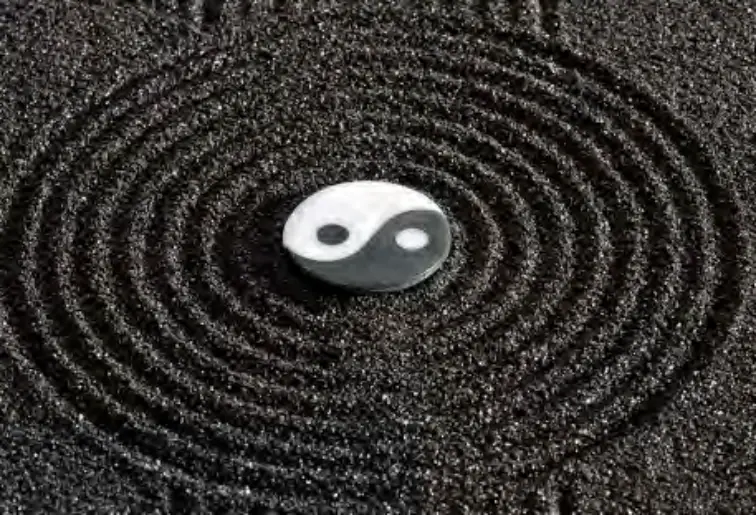
好，还有吗？为什么只有MP跟我碰撞啊？你们要多跟我碰撞、干扰和对垒嘛！
这个很重要啊，我鼓励大家整理。重要在什么呢？你们做创新的时候整套方法是
不是出来啦？这个思路比以前更加清楚了，我们出了一条路径：3、2、1是吧？
比如说，大家就可以去思考：“无为而无不为”要从哪个字开始解？
（为吧。）
对。要从“为”开始，去解构什么叫做“为”？
好，欢迎大家加入整理。
七、学员感想
赵明朋：
对于经典我们一直是保持一种敬畏的态度而从来没有批判地思考过。经过老师这
堂课才知道，原来老子对大自然的观察和体验，有其时间和空间的限制。当老子用水进行类比时，我们要放在一个更大的层级的视野，也就是天的三个视角：阳光，雨
水，空气，去看水是要解决怎样的矛盾。这样我们就不会把“上善若水”视为至高无
上的唯一真理。而是依据现实矛盾的不同，有时就学习做水，有时就要学习做阳光和
空气。
杨彼得：
被上善若水这个看起来无比高大上的理念统治了几十年，今天终于完全放下，如
同悬在半空的靴子终于落地了。我们该法什么，若什么，一切都是应效法的，一切也
都是可效法的，应是主体因着真善美价值预设，在具体粒子波场中，选择最适宜的效法对象，或如阳光照亮黑暗，或如雨水滋养万物，或如空气充满宇宙等等。在过程逻
辑的手术刀下，所谓的真理被解构的鲜血淋漓体无完肤，改归正的归正，该显明的一
一显明。
周迎志：
“上善若水”“水善利，万物而不争”诸多来自老子的经典名言，被我们中华儿
女当做生活、生存、生命里的最高境界来追求。哈哈！王老师带领我们揭开“上善如
水”的认知是源自于我们要解决粒子和场的矛盾冲突。在2000多年前，道不能改，粒子具有稳定性，人生活的场不能变，要天人合一，人要适应环境，能改的就是人的活
动方式改变。所以我们就在各个场里，见机行事。
像水，有时做冰，有时做水蒸气，有时做液体水。而这看上去灵活多变的人生，
却又成为阻碍中华民族创新的绊脚石。321智慧指导我们，上善可以若水，上善也可以若风，上善还可以若光。不同的善，要解决不同的矛盾。上善若光，是要解决波和场
的矛盾；上善若风是要解决粒子和波的矛盾。
这样我们就不仅仅是，到哪个山上唱哪首歌，总是是适应环境。也可以在各个场
里，有自己独立的杀手锏，不被人卡脖子。更可以在灾害不断，病毒肆掠时，我们可以向风，与毒共舞。王老师用321智慧，解读《道德经》，简直是打开天眼，看见一片
又高又远的新天地！
秦莉：
司空见惯的阳光、空气、水，2500 年前的老子就用形式逻辑类比出“上善若
水”。这一直影响着中华民族，子子孙孙也携带着这种特殊的文化属性——上善若
水，水善利万物而不争。课程中老师用321智慧将中华民族独特而又根深蒂固的观念击
打粉碎，让我们明白生活的方方面面同样不能缺少“上善若风，上善若光。”即使科学研究也是如此，否则很难有真正创新的东西出来。
321智慧让我大开眼界如获至宝，现实生活中各种矛盾冲突不断，用老师解构出来
的上善“若水、若风和若光”这一原理漂亮又好用。你我努力践行，愿世界和平诗意
栖居为期不远。
张洁：
上善若水，这几个字在每个人的生命中的出现都只有零次和无数次，人们向往水
的奔流不息、感怀水的柔和谦逊、羞于自己的污浊顽梗。也每每听到这几个字，就油然生出一股至高的民族自豪感，仿佛这就是要达到做人的最高境界的现实指导。直到老师这一次解构，使用321智慧体系，才能明白，如果没有了风和阳光，水的这些所谓
的品质其实无从生成，也就无所作为了。老师通过解构老子的身家背景，分析老子上
善若水的局限性，在面对矛盾的时候求和谐，不能进行粒子波场的转换造成了中华民族几千年来无法在人类文明史上留下光辉。上课的时候很多无法当场理解的地方通过
整理视频过程中几次来来回回的复习和思考也清晰了很多。
代丰畅：
体会了321智慧对上善柔水批判创新的路径，倍感自己创造力的局限，读了那么多
年的老子道德经竟然没有怀疑过。通过老师的这堂课，对于人生的矛盾处理如水、如
风、矣如阳光的智慧隐喻感触良多，也对理论批判与创新有了全新的认识！